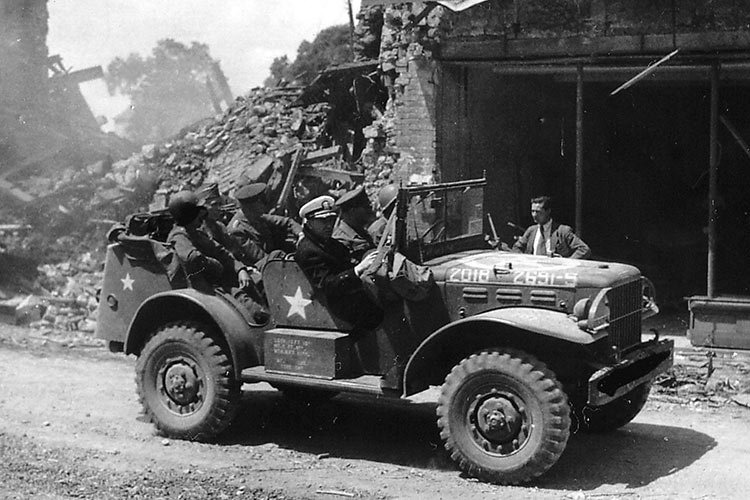
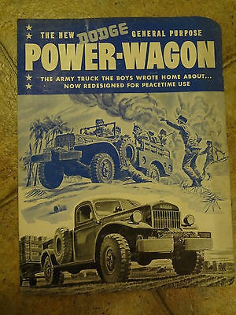
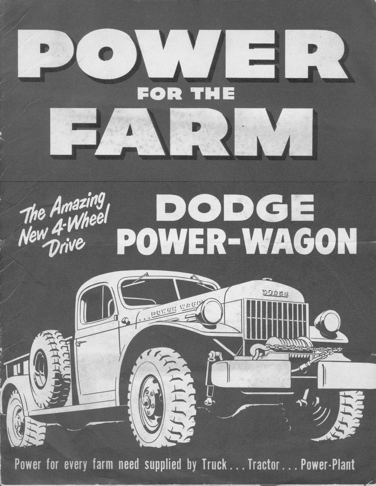
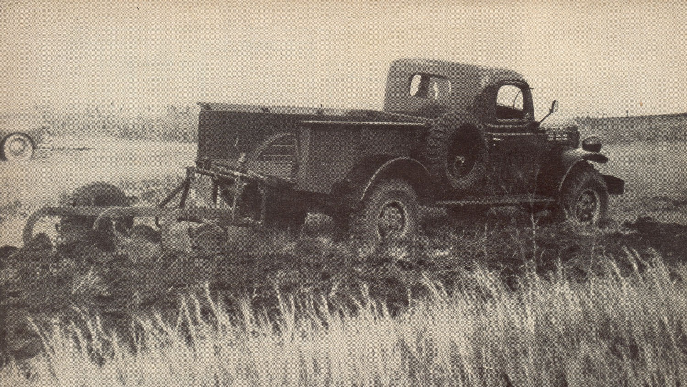
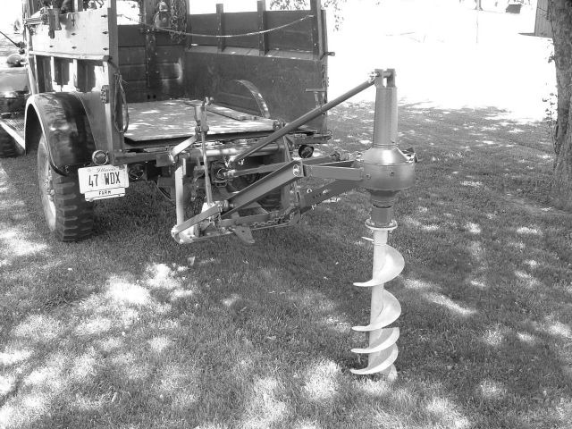
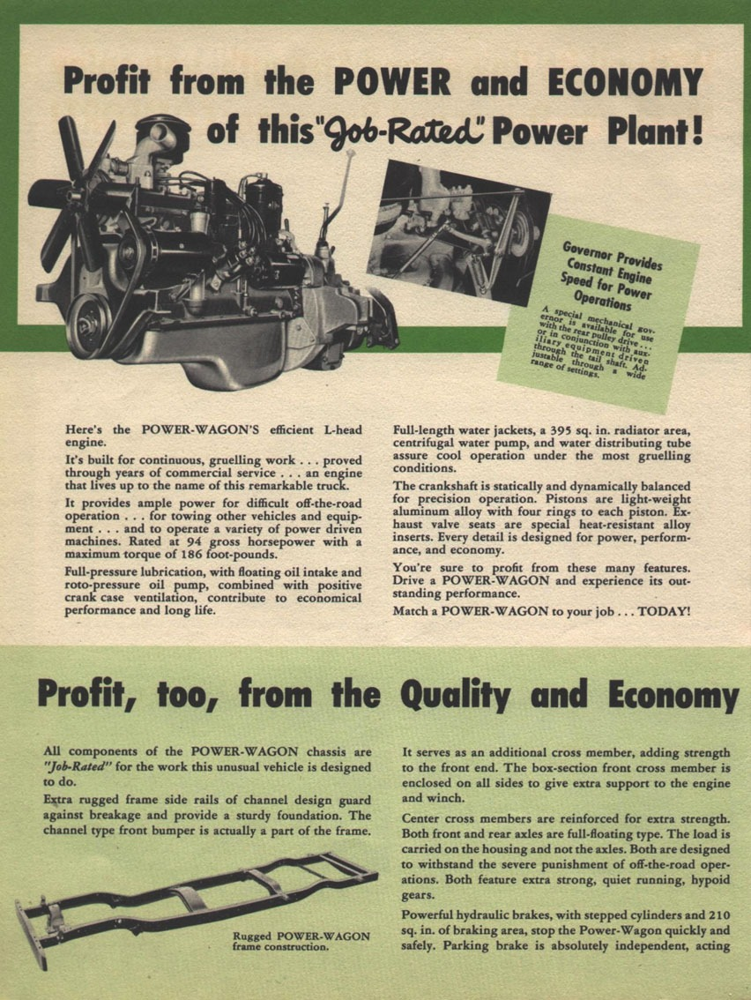
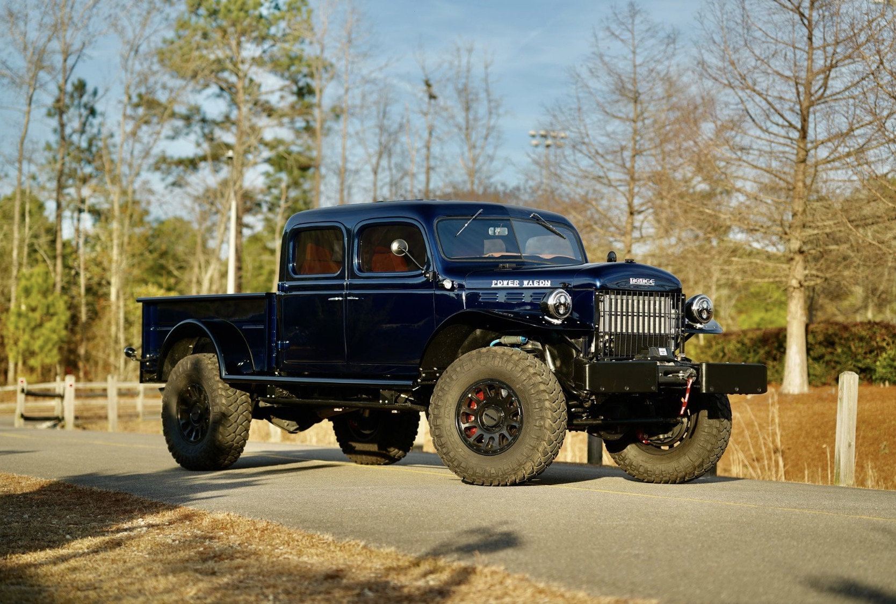

Eighty years of the go-anywhere truck — and one built to carry the whole story.
THE WHOLE STORY
Scan to read
on your phone
THE HISTORY · the army truck the boys wrote home about

A Dodge WC command car in a shattered town — the ancestor of every Power Wagon.
01 · BORN IN WAR
The Truck That Went to War
Dodge built the WC-series three-quarter-ton trucks that would go anywhere and never quit — and the GIs who drove them overseas never forgot them.
02 · THE BOYS WROTE HOME
“Where Can I Buy One?”
Farm boys wrote to Dodge asking for a civilian version. In 1946 Dodge answered with the Power Wagon — the first four-wheel-drive truck an ordinary buyer could drive off the lot.


“Power for the Farm” — sold as truck, tractor & power plant.

Breaking ground on four-wheel drive.

Power take-off ran a post-hole auger.

The “Job-Rated” L-head power plant.
Introduced1946 WDX
Engine230 cu in six
Power~94 hp
DriveFirst civilian 4×4
US Build1946–1968
Power take-offfront · ctr · rear
EIGHTY YEARS OF SERVICE
1940
WC series goes to war
1946
Power Wagon reaches the public
1957
Crew cabs enter the catalog
1968
US civilian sales end
1978
Last export builds
1980s
Still serving worldwide
2005
The name returns on the Ram
2021
75th anniversary edition
NOW
This truck, carrying the story
THE BUILD · nautical blue metallic · 1940s body, 2022 capability

Custom flat-fender coachwork, widened to a four-door crew cab, in Nautical Blue Metallic.
THE CONCEPT
1940s Body, 2022 Capability
A 2022 Ram 2500 Power Wagon Crew Cab, reimagined as a 1940s flat-fender Power Wagon while keeping the modern Ram chassis, drivetrain, and four-wheel-drive capability underneath — it looks like the truck the GIs brought home and drives like a current heavy-duty 4×4.